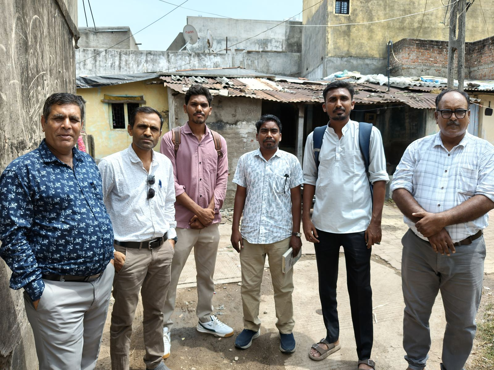

About Us

Manav Garima Foundation (MGF) is a grassroots organisation working with the Valmiki community which is engaged in unclean occupation of manual scavenging – cleaning underground drainage & septic tanks and human excreta from open defecation sites manually. MGF also works with sanitation workers engaged in cleaning streets, housing & commercial complexes and waste collections. MGF aims at eradication of manual scavenging, promoting the use of safety equipment among sanitation workers and for overall socio-economic empowerment of the community.
In 2003, our journey started by Janvikas as a small initiative of supporting a community leader who started addressing issues of deaths of manhole (underground drainage cleaning) workers and eviction of pavement dwellers where community lived. It was realized that the issue is very serious in urban areas and need urgent interventions, a long-term programme called “Garima” (also known as Manav Garima widely) was evolved. Now it is a registered organization and has hived off from Janvikas. Janvikas continues to provide unconditional support to MGF wherever required. Based on our experience in Gujarat, Janvikas also supported 10 CBOs across 5 states from 2010 to 2018 on this issue. Some of these CBOs today have become well known for their meaningful contribution in their respective states.
Our Vision
MGF envisions where society becomes more civilized in maintaining cleanliness and civic bodies become more accountable towards total eradication of manual cleaning of underground drainages/septic tanks and unsafe cleaning of streets & waste collection.
Our Mission
To engage with society, civic bodies and sanitation workers towards the use of technology and safety equipment in cleaning occupation. Secondly to empower the Valmiki community through education, alternate livelihoods, nutrition & hygiene, leadership development etc so they live a dignified life.
Our key interventions
Ending Manual Scavenging & Promoting Safe Sanitation
We work to prevent manual scavenging and deaths during hazardous cleaning of septic tanks and sewers. We create awareness of the 2013 law prohibiting manual scavenging and promote use of safety equipment & technology. Our legal interventions and engagement with state and local governments aim at proper implementation of the law as well as access to compensation for the families of deceased workers while cleaning drainages and septic tanks.
Foundational Literacy, Numeracy and Science (FLN)
Our community-based education centres support children of Grades 1 to 5 through activity-based learning, strengthening foundational literacy, numeracy, and science. We train community educators and develop teaching learning material (TLM). The parents are encouraged to contribute towards maintaining the centres.
Career Guidance & Youth Development
We support young people through career guidance, English-speaking and computer learning, and opportunities to develop the skills and confidence needed for further education and employment.
Dignified Livelihoods
We train, motivate and support young women and men from the community for alternative livelihoods with focus on self-employment. Some of the self-employment activities taken up by youth are: beautician, four-wheeler driving, mobile repairing, food carts.
Safety & Hygiene in Cleaning Work
We promote the use of safety equipment and healthy workplace practices among sanitation workers and undertake action research to identify practical solutions for safer and more dignified work.
Nutrition & Hygiene
We work with communities to encourage simple and sustainable practices that improve nutrition, hygiene, and overall health and well-being.
Access to Entitlements
We support the families in accessing government schemes and in preparing documents & accessing entitlement cards. We also support community in addressing common issues of basic amenities.